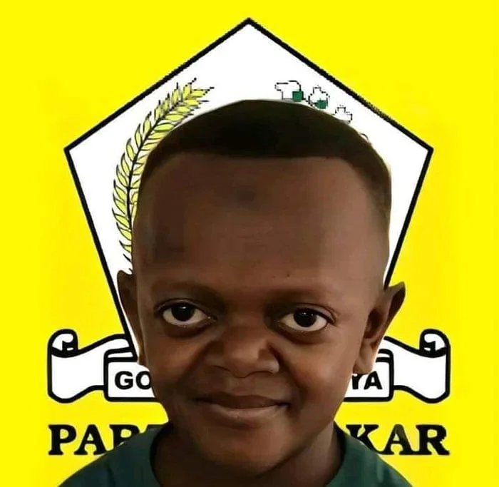

Portofolio Bahlil

Tentang Saya
Saya Bahlil, seorang web developer yang ceria.
“Berpikir digital, bertindak nyata.”
Pengalaman Kerja
| Posisi |
Perusahaan |
Tahun |
| Web Developer |
PT. Teknologi |
2020–2023 |
| Junior Developer |
PT. Inovasi |
2018–2020 |
Hobi
- Desain UI/UX
- Membaca Teknologi
- Fotografi Street
- Belajar Bahasa Jepang
- Menulis Tutorial
- Eksperimen AI
Lagu Favorit